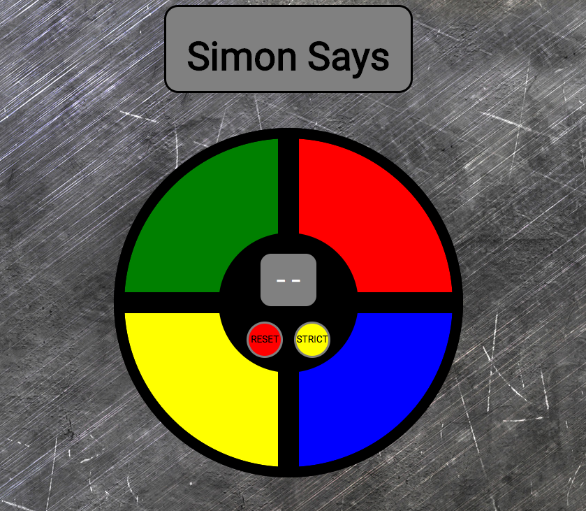
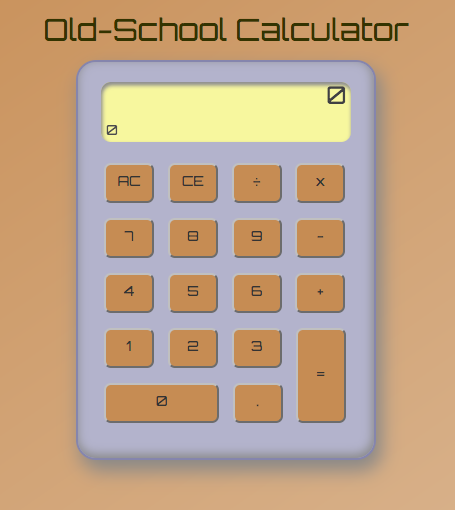
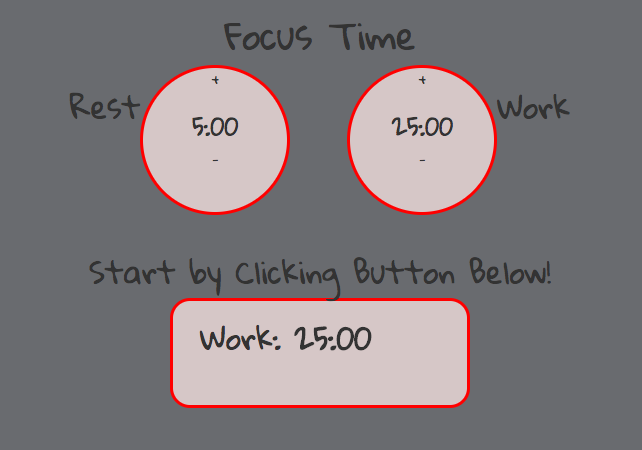
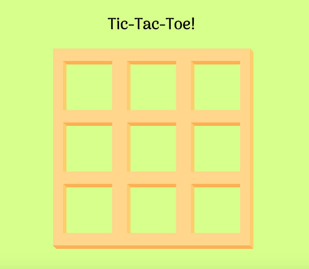
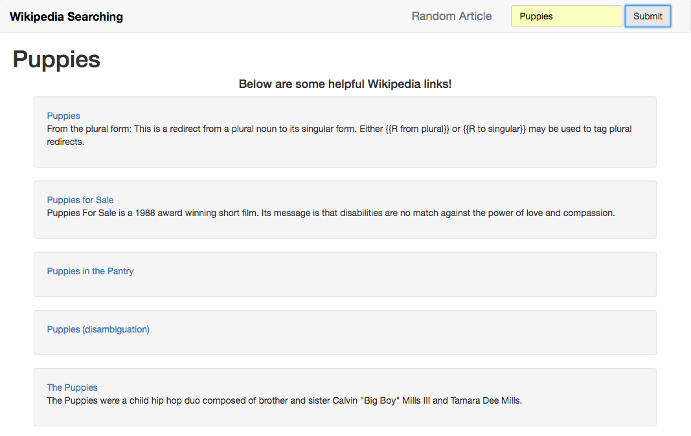
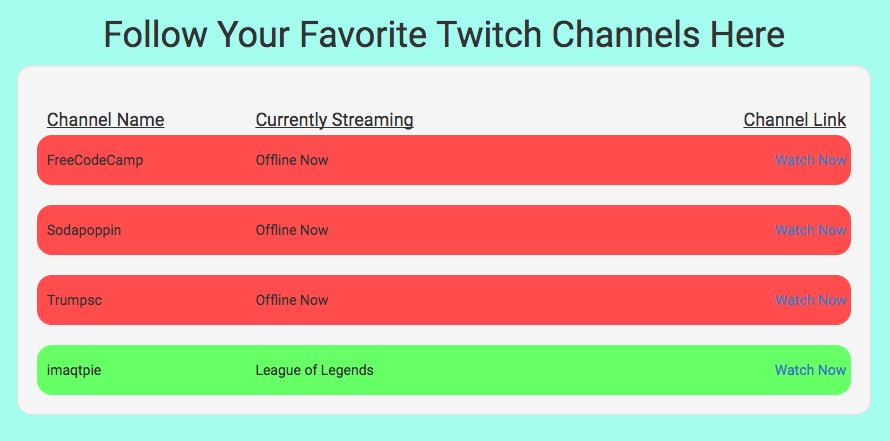
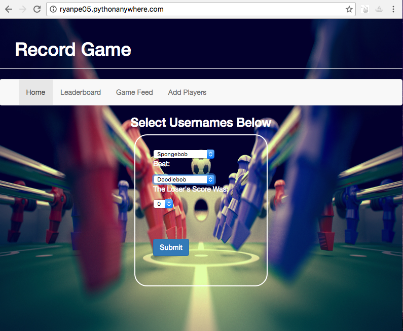

Ryan Peck's Web Design
Selected FreeCodeCamp Projects






Live Websites

This website keeps track of foosball game results between my teammates on the Georgia Tech cross country team. It ranks players by Elo score and calculates various other stats. Please do not submit games or add players. This website is live and in use! Made using Python, Flask, and MySQL.